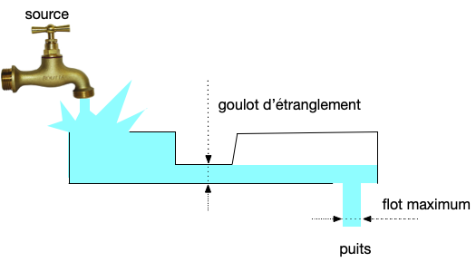

Flots
Modéliser des problèmes de robinets par la théorie des graphes.
Les exemples de ce cours ont été pris dans l'excellent livre de Charon et Hudry Introduction à l'optimisation continue et discrète.
On considère un réseau de canalisations, chaque tuyau le constituant ayant une capacité (le diamètre) particulière. Dans ce réseau on considère deux nœuds d'intérêt :
- la source : le robinet
- le puits : l'endroit on l'on veut récupérer l'eau.
Lorsque l'on ouvre le robinet, on peut mesurer le débit (en $m^3/s$) au puits.

Quel est le flot maximum (débit maximum) que l'on peut avoir si on ouvre à fond le robinet ?

Remarquez bien qu'une fois le flot maximum atteint, il ne sert rien d'ouvrir plus le robinet.
Où est le goulot d'étranglement du réseau ?

Notez que le goulot d'étranglement est le flot maximum.
C'est pour résoudre ces problèmes d'importance capitale sans avoir besoin de se mouiller que nous allons utiliser la théorie des graphes. On verra aussi quelques cas d'applications où les flots apparaissent alors qu'on ne les attendait pas.
Définitions
Algorithmes
Il existe de nombreux algorithme pour résoudre le problème du flot maximum. Nous allons en voir plusieurs d'utilités différentes. Ils sont tous basés sur la même idée :
- trouver une chaîne augmentante
- maximiser sa valeur en l'augmentant au maximum sa valeur de flot
Lorsque l'on ne trouve plus de chaîne augmentante, le flot est maximum.
L'initialisation est toujours possible puisque le flot nul est un flot possible.
Si l'on suppose que nos capacités sont entières on pourra augmenter au minimum de 1 unité toutes nos chaînes augmentantes à chaque fois, donc l'algorithme va converger en :
- au maximum $C(S, \overline{S})$ itérations où $S$ est une coupe
- au maximum $\max \mbox{val}(f)$ itérations où $\max \mbox{val}(f)$ est la valeur de flot maximum
- au maximum $\vert V \vert \cdot c_\max$ itérations où $c_\max$ est la capacité maximale (pour montrer ça on considère la coupe $(\{s\}, V \backslash \{s \})$ : $s$ a au plus $\vert V\vert$ voisins et chacun de capacité maximale au plus $c_\max$)
Ford et Fulkerson
Edmonds et Karp
Busaker et Gowen
Méthodes spectrales
TBD